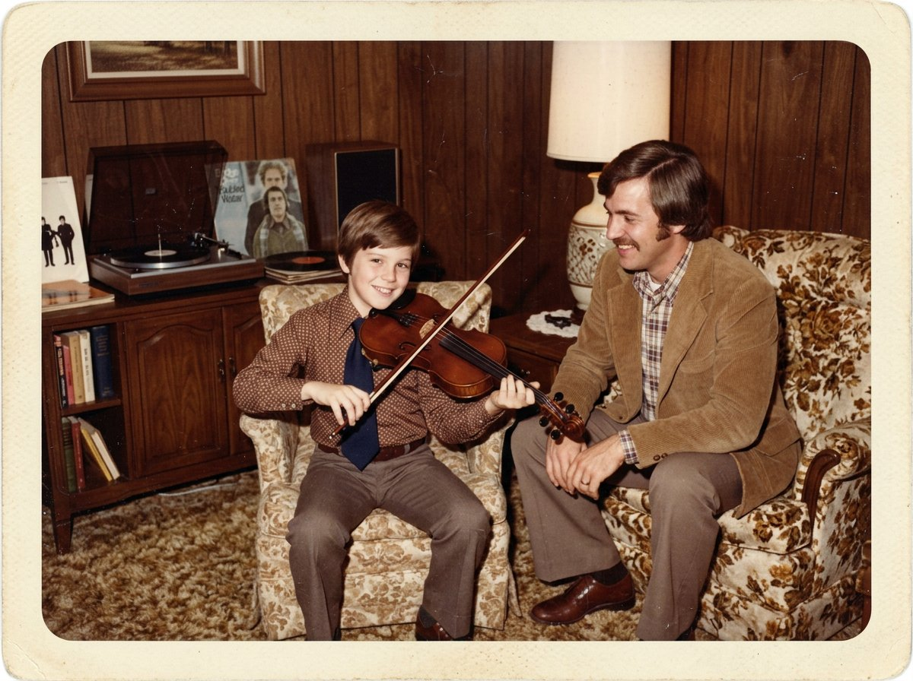
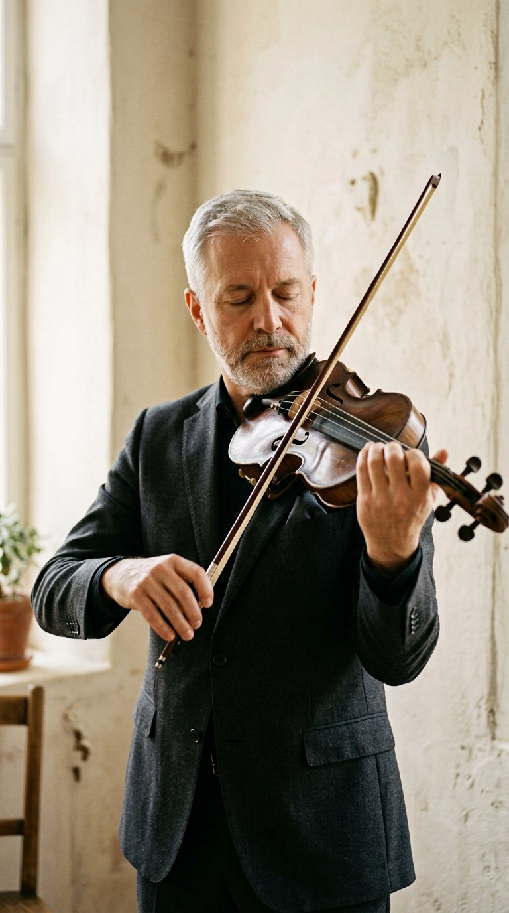

Archive · 01
Dad, and a cello
To read about my father — cellist, teacher, and the reason any of this started — visit richardamorosocello.com.
02 / 07
1970s · the first instrument
Wanting to be like him, I have pictures of me playing a toy violin like a cello when I was two or three. But one day when I was four, my dad — while doing his coursework to be certified to teach music — brought home a violin. I remember it like it was yesterday. My eyes popped out: I had no idea they made real “cellos” that were smaller than me.
It was too big. I begged him to get me a smaller one, and on the third try he brought one home I could hold and play. He showed me a few things, and within a short time that day I successfully played Twinkle Twinkle. My parents were immediately thrilled — I played the song over the phone for my grandparents and great aunts. Little did I know I would be performing on the violin for the rest of my life.
I still have and cherish that very same instrument.

First lessons with Chuck Parker. First performance: a first-grade Christmas concert — nervous and excited, “I would say it is no different now when I have to perform.”
03 / 07
How I got here
Most violinists' paths are a straight line from the practice room to the chair. Mine was not — and that is exactly why I teach the way I do.
As time went on I practised and performed in my grandfather's barber shop while my mother helped in my grandmother's card and gift shop next door. I had no idea how much I was learning about performing and interacting with the public.
My dad was an audiophile and constantly had music playing to test his components — mostly symphonic. Just by living in that house I received a great musical education, plus the normal father/son arguments about my practice habits.
My greatest accomplishment in my youth: at twelve, I won the Philadelphia Orchestra's Student Competition (now the Albert M. Greenfield Competition). The prize was a solo with the Orchestra — the following year I played the first movement of Mozart's Fourth Concerto at the Academy of Music.
In high school I took lessons with the Orchestra's retired Concertmaster, played chamber ensembles and Philadelphia Youth Orchestra, and studied piano — while still not considering myself dedicated or passionate about practising.
At the end of high school I truly did not know what to do. I had the ability and could have gone to music school, but for whatever reason I chose not to. Neither Norman Carol nor my father pushed me. To this day I can't explain it.
Two years at Villanova, initially as an Electrical Engineering major (I nearly failed Calculus), then Accounting. I transferred to Dickinson College and graduated in Economics — in four years total, so it cost my parents nothing extra.
After Dickinson I had no passion for the jobs I was interviewing for. My lowest point was taking a job as a telemarketer. In between, part-time work at a golf course, where I became a half-decent golfer.
I followed my father's footsteps and got certified to teach music at Immaculata College, student teaching at Lower Merion HS in Ardmore. Meanwhile I played freelance gigs on the violin, including a solo with my dad and the Philly Pops in my senior year of high school.
The Philly Pops conductor and personnel manager — who had heard me play — hired me into the second violin section. That is how I met a player who had just left Curtis and was in the Concerto Soloists. We played golf; I asked for a lesson; and all of a sudden I got the bug to practise.
The most important day: subbing as a band teacher in a middle school, a student overheard me practising during a break and told me I was talented. That is when the direction of my life really started to change.

I asked my dad if it was too late to pursue the violin at 23, without a music degree. He told me to go for it. So I studied with William DePasquale, Rafael Druian and David Arben among others, and practised in amounts and ways I never had in my whole life.
In two years I won a position with Concerto Soloists and got onto the Philadelphia Orchestra's B sub list. At 27 I had a tough decision: keep the gigs, or protect the practice hours. I quit being a member of Concerto Soloists.

That September I was in the finals of the Cincinnati Symphony for the third time. But everything was pointed at Philadelphia. My first round felt horrible — and then I let go and was myself. Each round I gained confidence, and ultimately won a position in the First Violin Section.
The same year I returned to Carnegie for a solo recital, I founded Amoroso Violin Studio — twenty-two years and more than one hundred students later.
My uncle, also a musician, told me soon after I got into the Orchestra how fortunate I was, and to never lose sight of it. He was right. I truly love music and what I get to do day in and day out.
04 / 07

What the detours taught me
My path was an unusual one: an economics degree, a telemarketing job, a teaching certificate, and a first audition at 27 in a borrowed, ugly, inexpensive violin I could not have afforded to replace. My greatest strength was perseverance and optimism — and the practice method I had to invent because no one handed me one.
That is what the studio teaches: not only what to play, but how to work. My attitude in audition season was to not worry about the outcome and focus only on getting better. It is the same advice I give every student who walks in worrying they are behind.
05 / 07
Archive · 01
To read about my father — cellist, teacher, and the reason any of this started — visit richardamorosocello.com.
Archive · 02
The instrument I perform and record on — and never owned cheaply.
Archive · 03
A trio recital and, in 2004, a solo recital at Weill Recital Hall.
“So if you need a helping hand — I can help you play the way you've always dreamed.”
Richard Amoroso

Free guide
What an audition committee hears in the first sixty seconds of your first-round excerpt — eight checkpoints, plus what to do in the practice room about each one.